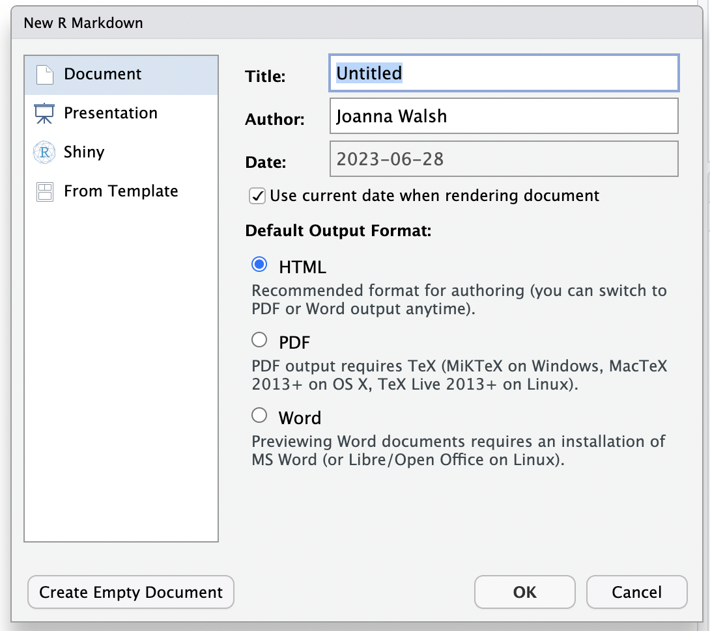

12. Writing Reports with R Markdown#
This chapter will introduce you to R Markdown, which is a document format that combines markdown text with R code. Writing in R markdown can help you write reproducible code and create polished reports to present your analyses.
Starting an R Markdown file#
To create an R Markdown file, you will need to have RStudio installed as an application. You’ll also need to install the rmarkdown package in addition to the knitr package. We also recommend the bookdown package, which allows us to create section, figure, and table references, as well as the kableExtra package for formmating your tables.
Now that you have these packages downloaded, opening a new R Markdown file is very similar to opening a new R file, which was covered in Chapter 1. Just like opening a new R file, you’ll want to go to File -> New File, but instead of selecting ‘R Script’, you’ll now select ‘R Markdown…’. This should bring up a window that looks like the following:
{kind=link}
First, enter a title of your choosing for your report and type your name in the Author field - note that you can always change these later - and then click on OK. This will open an R Markdown file that has the extension .Rmd. Make sure to save this file with a suitable name in your desired location on your computer by selecting File -> Save, and then you’re ready to start writing your report!
Your file should now look like this:

You will write all of the text and code that you would like to include in your report in this .Rmd file, and then you can produce a nicely formatted report from this file by ‘knitting’ the file. You can either knit to HTML, PDF, or WORD by clicking on the knit icon (below) from the toolbar at the top of the page and then selecting your desired output file type.
Adding Code Chunks#
Each of the darker gray rectangles is called a code chunk - all of the code used to generate your report will go in these chunks, and all of your writing will go between them. Each code chunk starts with ```{r} and ends with ```. To create a chunk, you can either
click on this green “add chunk” symbol
 in the toolbar at the top of the page
in the toolbar at the top of the pagetype
```{r}and```use the keyboard shortcut Ctrl + Alt + I (Cmd + Option + I on Macs)
To run the code in a chunk, you can either use the keyboard shortcut Ctrl + Enter (Cmd + Return on Mac), or you can use one of the following buttons at the top right of the chunks:
 runs all chunks above the current chunk
runs all chunks above the current chunkruns the current chunk
Customizing Chunks#
You can specify whether you want to include the code and/or its various output in your final report by adding the following commands, separated by commas, to the right of the {r} at the top of the code chunk:
include = FALSEmakes it so that neither code nor its output will appear in your reportecho = FALSEmakes it so that the output of the code but not the code itself will appear in your reportmessage = FALSE,warning = FALSE, anderror = FALSEmakes it so that messages, warnings, and errors (respectively) that are generated from the code in the chunk won’t appear in your report
To customize a single code chunk, you can either type one of the above commands next to the {r} at the top of the code chunk by yourself or you can click on the ‘Modify Chunk Options’ symbol at the top right of the code chunk.
To apply the same customizations to all chunks in the document at once, you can add them to the first chunk at the very top of your R Markdown that starts with ```{r setup, include=FALSE} using the knitr::opts_chunk$set function. These are called the global settings. For example, using the following code for your first code chunk will make it so that none of the errors, warnings, or messages from any of the code chunks will appear in your final report. It is also good practice to load all the packages you are using for your report within this first code chunk using the library() function. For example, below we load the tidyverse and RforHDSdata packages.
If you want to display the code for your report in a code appendix, you can easily do this by creating an empty code chunk at the end of your .Rmd file with these chunk options ref.label=knitr::all_labels(), echo = TRUE, and eval = FALSE.
You can also have inline R code by using single backticks around your code `r max(c(1,2,3)) `. The code must start with r to be run when knit. This allows you to reference variables in your text. For example, we could display the variance of a column in our data without having to copy the value over.
Formatting Text in Markdown#
To add text to your report, you can simply type directly into the R Markdown file, between the code chunks. This code is formatted using markdown, which allows us to specify how to format and display the text when it is knit. For example, adding a single asterisk * on either side of some text will italicize it, while adding a double asterisk ** on either side of text will make it bold. To indicate code you can use backticks `.
regular text
italicized text
bolded text
code text
To create headers and sections, you can add the # symbol in front of your text. Adding more of these symbols makes the headers smaller, which is useful for making subheaders.
Header #
Smaller Header #
Even Smaller Header #
You can also add links [text](www.example.com) and images 
The Markdown Guide has a great cheat sheet as well as more resources for formatting markdown text.
Formatting Figures and Tables#
Often, you’ll want to include figures generated by your code in your report, and you can customize these figures by changing the chunk options for the chunks that produce them. To change the size of the figure, you can add in the chunk option out.width="50%" with your desired percentage of the full size. To add a nice caption to the figure in your report, you can add fig.cap = 'Your Desired Caption.. To name the figure, you can add a name next to the r in the chunk options, without a comma, like {r figname}. Alternatively, you can name figures by entering text into the ‘Chunk Name’ field using the ‘Modify Chunk Options’ button at the top right of a chunk.
By default, the figures generated by your code chunks are allowed to ‘float’ in R Markdown - this means that the figures might move away from where they were coded or referenced in the final report. If you don’t want this to happen, you can customize the chunk that contains the code to produce the figure by adding fig.pos = "H" to that chunk’s options. If you want to prevent floating for all figures, add fig.pos = "H", out.extra = '' to the first code chunk in the file (the one that starts with the knitr::opts_chunk$set function).
{kind=link}
If you want to make data frames, matrices, or tables from your raw R output more polished and aesthetically pleasing, the gt and kableExtra packages have options. Be sure to load the package you are using to the code chunk at the top of your R Markdown file that contains all of your libraries.
To demonstrate the abilities of these package, let’s suppose that we wanted to display the head of the first few columns of the breastcancer dataset from the RforHDSdata package. The following code produces the following output in the knitted pdf report - you can see that it essentially just copies the raw output from R, which is rather messy.

We use the kable() and kable_styling() functions from the kableExtra package to produce a more nicely formatted table. The kable() function generates a table from a data frame. The kable() function allows you to specify some display options for your table. For example, you can add a caption to your table using the caption argument and you can change the names of the columns in the table using the col.names argument. The kable_styling() has additional options available. Similar to the fig.pos = H command described for figures in the previous section, adding “HOLD_position” to the kable_styling() function will prevent the table from floating on the report; adding "scale_down" scales the table so that it fits in the margins of the paper. The updated code and output are below. See the documentation for the kable and kable_styling functions for more options available.
{kind=link}
Above, we can see that kable produces a much nicer table in the knitted pdf that is more suitable for a data analysis report. In Chapter 4, we also introduced the gt package. This package is an alternative package to kableExtra that allows you to format each part of the table including formatting for the columns, adding footers or subtitles, or grouping your table. See the package introduction for more details about this package. An example gt table is given below.
{kind=link}
Using Bookdown for References#
R Markdown automatically adds figure and table numbers to the figures and tables in your report. The bookdown package allows us to add references. To use this package, make sure you have installed the bookdown package and then add the following text to the top of your .Rmd file, next to “output”.
The above code specifies that you would like to knit your file to a pdf document. If you would like to knit your file to an html or word document instead, you could type bookdown::html_document2 or bookdown::word_document2 instead. The toc: false indicates that you do not want to include a table of contents in the report. If you do want one, you can simply type toc:true instead. Once you’ve done this, you can reference figures and tables using their names: \@ref(fig:figname)) or \@ref(tab:tablename). The knitted pdf will substitude in the appropriate figure or table number.
Additionally, we can reference sections by adding in labels to the section header. For example, we added the tag #awesome for the section below and can now reference it using \@ref{awesome}.
Adding in Equations#
Another useful option in markdown is the option to add in mathematical equations. If you want to insert math equations, you can do so by writing LaTeX expressions. To write a math equation inline, you put a single dollar sign $ on either side of your equation, and to write a math equation on its own line, you put a double dollar sign $$ on either side of the equation, like so:
Here’s an equation that is inline with the text: $5x^2 + 9x^3$ produces \(5x^2 + 9x^3\).
On the other hand, here’s an equation that is on its own line: $$5x^2 + 9x^3$$ produces $\(5x^2 + 9x^3\)$
Here are some other LaTeX notation you should know in order to write common equations:
To create a fraction, type
\frac{numerator}{denominator}. For example,\frac{2}{3}produces \(\frac{2}{3}\).To create a subscript, type
_. For example,x_{2}produces \(x_2\).To create a superscript, type
^. For example,x^{2}produces \(x^2\).
If you want to learn more about how to write in LaTeX, Art of Problem Solving provides a great reference for LaTeX symbols and [Overleaf](https://www.overleaf.com/learn/latex/Free_online_introduction_to_LaTeX_(part_1) provides a helpful introduction to LaTeX in general.
TO DO: Fix up icons
TO DO: Add in example R Markdown file to link to and to recreate